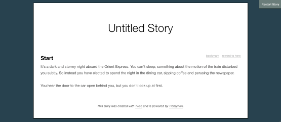

Let's get started with a simple passage. Open up your text editor and type this into a new document:
:: Start
It's a dark and stormy night aboard the Orient Express. You can't sleep; something about the motion
of the train disturbed you subtly. So instead you have elected to spend the night in the dining car,
sipping coffee and perusing the newspaper.
The examples in this document use the traditional second-person present tense point of view found in a Choose Your Own Adventure story. But this isn't the only perspective you could use in a story.
To create a passage in source code, put two colons before its title, then skip a line, then enter its text. To add paragraph breaks inside a passage, skip two lines like this:
:: Start
It's a dark and stormy night aboard the Orient Express. You can't sleep; something about the motion of the train
disturbed you subtly. So instead you have elected to spend the night in the dining car, sipping coffee and
perusing the newspaper.
You hear the door to the car open behind you, but you don't look up at first.
In this case, the amount of line spacing you use is important. If you put in too little, your source code won't be understood properly; if you use too much, your story will have extra whitespace.
Save this to a file named orient.tw. It's best to end source file names with the .tw
extension, to keep them separate from other kinds of files.
Using a .tw file extension can confuse your computer at first, since it doesn't know what a
.tw file is supposed to be. How you teach your computer this depends on whether you're using
Windows or a Mac, but if you have trouble getting it to work, try using a .txt extension instead.
Now try turning this source code into a story in the Jonah format. If you're not sure how to accomplish this, check Setting Up Tweebox or Setting Up Twee. When you open the resulting file, you should see something like this:

It's not very exciting to look at yet, but it's a start. Let's go over some things you can do with your story even its current state. First of all, there's a Restart Story link in the upper-right corner of the page. Clicking this restores your story to its initial state. Right now, it doesn't change anything since there's only one passage to the story.
At the the top of the page is your story's title. We'll talk about how to change this in Finishing Up; if you don't set a story title, your story is simply called Untitled Story.
The first passage of your story appears underneath the title. By convention, the first passage of your story is called Start; there's a way to change this, too, that we'll talk about later. There are two links for each passage in your story: Bookmark, which lets readers save a certain point in your story to come back to, and Rewind to Here, which lets readers return to an earlier point in your story.